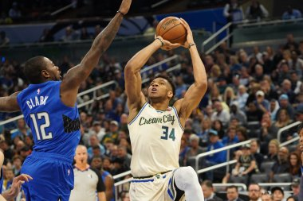
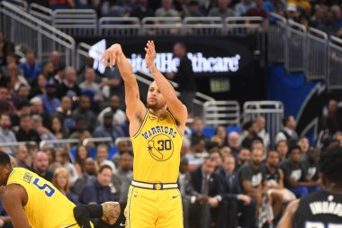

Redmonds Website!
About Me
I'm an NBA fan and the sole purpose of my website is for it to be a easy place to keep up with NBA standings and stats.
Eastern Confrence standings
- 1st place Boston Celtics
- 2nd place Milwaukee Bucks
- 3rd place Clevland Caviliers
- 4th place New York Knicks
- 5th place Orlando Magic
- 6th place Philidelphia 76ers
- 7th place Indiana Pacers
- 8th place Miami Heat
- 9th place Chicago Bulls
- 10th place Atlanta Hawks
- 11th place Brooklyn Nets
- 12th place Toronto Raptors
- 13th place Charlotte Hornets
- 14th place Detriot Pistons
- 15th place Wasington Wizards
Some recent Eastern Confrence News
at Bleacher Report.

Western Confrence standings
- Oklahoma City Thunder
- Denver Nuggets
- Minosota Timberwolves
- Los Angeles Clippers
- New Orlenas Pelicans
- Sacramento Kings
- Dallas Mavericks
- Phoenix Suns
- Los Angeles Lakers
- Golden State Warriors
- Houston Rockets
- Utah Jazz
- Memphis Grizzlies
- Portland Trailblazers
- San Antonio Spurs
Some recent Western Confrence News
at Bleacher Report.

Leading Scorers in the NBA
- Luka Doncic 34.1 ppg
- Shai Gilgeous Alexander 30.9 ppg
- Giannis Antetokounmpo 30.8 ppg
- Kevin Durant 27.8 ppg
- Jalen Brunson 27.6 ppg
Leading Rebounders in the NBA
- Domantas Sabonis 13.7 rpg
- Rudy Gobert 12.9 rpg
- Anthony Davis 12.3 rpg
- Nikola Jokic 12.3 rpg
- Jalen Duren 11.9 rpg
Leading Assiters in the NBA
- Tyrese Haliburton 11.3 apg
- Trae Young 10.8 apg
- Luka Doncic 9.8 apg
- Nikola Jokic 9.0 apg
- James Harden 8.3 apg